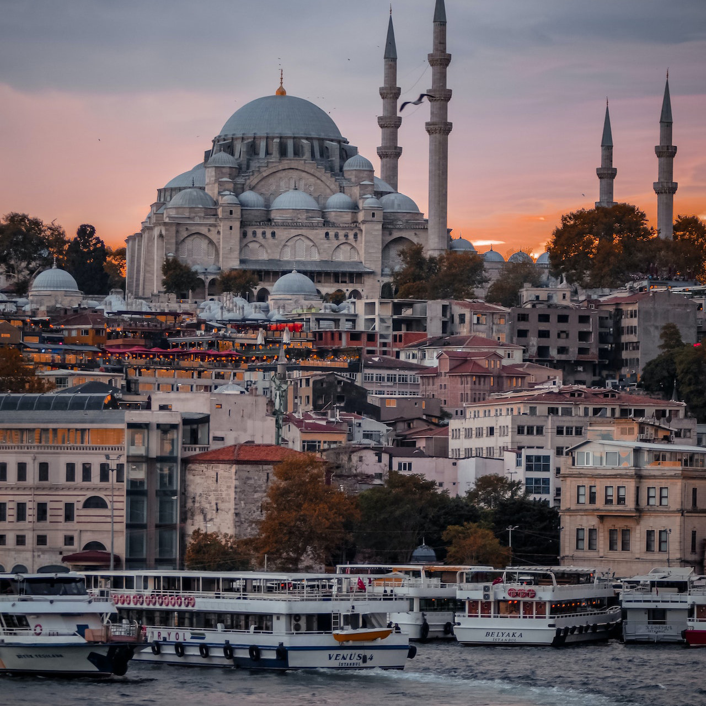

UNI Travel - Dẫn Lối Bạn Đến Những Kỳ Quan Mới.
Kashmir
**Thiên đường nơi trần gian**
Kashmir là một trong những điểm đến du lịch đẹp nhất ở miền Bắc Ấn Độ. Không nơi nào ở Ấn Độ bạn có thể chiêm ngưỡng được những cảnh quan tuyệt đẹp, sông băng băng giá, hồ nước trong lành và những ngọn núi cao hùng vĩ như ở Kashmir. Sự thanh bình và tĩnh lặng được tái định nghĩa từ không gian của Kashmir. Dù là mùa hè, mùa đông hay mùa mưa, mỗi mùa đều mang một vẻ đẹp riêng ở Kashmir. Vô số kỳ quan của thiên nhiên, văn hóa, ẩm thực và lịch sử phong phú của Kashmir sẽ nâng tầm trải nghiệm du lịch của bạn tại Ấn Độ kỳ diệu.
Istanbul
**Istanbul**
Istanbul, nơi hội tụ những giá trị lịch sử và văn hóa độc đáo, đã từng là ngôi nhà chung của nhiều nền văn minh khác nhau nhờ vị trí địa lý trải dài trên hai châu lục. Thành phố độc nhất vô nhị này, được ngưỡng mộ bởi vẻ đẹp thiên nhiên quyến rũ và không gian hấp dẫn, cũng là biểu tượng của một đời sống đô thị hiện đại và năng động. Istanbul mang trong mình một nét đặc trưng đa văn hóa và bầu không khí sôi động, nơi quá khứ và tương lai hòa quyện làm một, mang đến cảm giác về dòng chảy lịch sử nhân loại ở từng bước chân.

Paris
**Paris**
Paris là một thành phố đa dạng và tinh tế, thu hút những người giàu có nhưng cũng có thể được tận hưởng với ngân sách hạn chế. Ngoài tháp Eiffel, Paris còn có vô số các điểm tham quan và di tích tuyệt đẹp khác, góp phần làm tăng vẻ đẹp của những đại lộ rộng lớn và những quán cà phê quyến rũ. Ẩm thực Pháp cũng nổi tiếng toàn cầu, và bạn có thể tìm thấy những món ăn ngon nhất tại Paris. Thành phố này có nhiều cảnh quan ấn tượng, với kiến trúc và thiết kế tuyệt đẹp, và những địa danh này đã trở thành nổi tiếng toàn thế giới vì vẻ đẹp của chúng.
Bali
**Bali**
Vẻ đẹp của Bali không chỉ dừng lại ở hình thức bên ngoài mà còn sâu sắc hơn thế. Song song với những kỳ quan thiên nhiên, Bali còn có một lựa chọn đa dạng về nơi lưu trú tuyệt vời. Từ các khu nghỉ dưỡng sang trọng đến những nhà trọ giá rẻ, các nhà phát triển đã nỗ lực tạo ra những nơi ở xuất sắc, đầy đủ tiện nghi và thú vị. Các biệt thự riêng cũng có thể được thuê với mức giá cực kỳ hợp lý. Nhiều khu nghỉ dưỡng và khách sạn sở hữu các bể bơi tuyệt đẹp và bể bơi vô cực, hầu hết trong số đó là những điểm tham quan hấp dẫn tự thân.
Dubai
**Dubai**
Dubai là điểm đến lý tưởng cho kỳ nghỉ của gia đình, với các công viên chủ đề, bãi biển, bữa brunch vào thứ Sáu và nhiều hoạt động khác để làm hài lòng mọi người. Burj Khalifa, tòa nhà cao nhất thế giới, xứng đáng với mức phí vào cửa. Burj Al-Arab, thường được quảng cáo là khách sạn 7 sao duy nhất trên thế giới, lại không thực sự ấn tượng. Tương tự, công viên nước Aquaventure tại khách sạn Palms Atlantis là một điểm đến không thể bỏ qua. Jumeirah Beach Residence đã trở thành bãi biển nổi tiếng nhất của Dubai, và vị trí gần các nhà hàng, quán cà phê và cửa hàng làm cho nó xứng đáng với danh hiệu này.
Geneva
**Geneva**
Thành phố quyến rũ Geneva mang đến vô số các điểm tham quan và vẻ đẹp thiên nhiên tuyệt vời khiến mọi du khách đều phải lòng. Tuy nhiên, với quá nhiều điểm đến hấp dẫn, các du khách ba lô thường gặp khó khăn trong việc lựa chọn nơi nên đến đầu tiên. Hầu hết họ thường bỏ lỡ những điều tuyệt vời nhất mà thành phố tuyệt vời này mang lại. Là thủ đô của Thụy Sĩ và một thành phố xinh đẹp bên hồ, Geneva là nơi đặt trụ sở của nhiều tổ chức quốc tế như Liên Hợp Quốc.
Port Blair
**Port Blair**
Port Blair là một điểm đến hấp dẫn đối với du khách với hàng loạt địa điểm thú vị. Tại đây có những bãi biển lấp lánh nhưng sạch sẽ, những bãi biển chịu đựng được sức mạnh của biển và cho phép du khách bơi lội một cách thoải mái, di tích của thời kỳ thực dân và sự áp bức, nhiều bảo tàng và thư viện đáng ghé thăm, những rạn san hô và nhiều điều thú vị khác.
Rome
**Rome**
Thủ đô của một trong những đế chế cổ đại hùng mạnh nhất thế giới, Rome là một thành phố đầy hấp dẫn đã truyền cảm hứng cho mọi người đến thăm trong suốt hàng thiên niên kỷ. Với những tác phẩm nghệ thuật tuyệt vời, nhịp sống chậm rãi và ẩm thực nổi tiếng toàn cầu, Thành phố Vĩnh hằng xứng đáng được ghé thăm ít nhất một lần, dù sẽ mất cả đời để khám phá tất cả những gì nó mang lại.